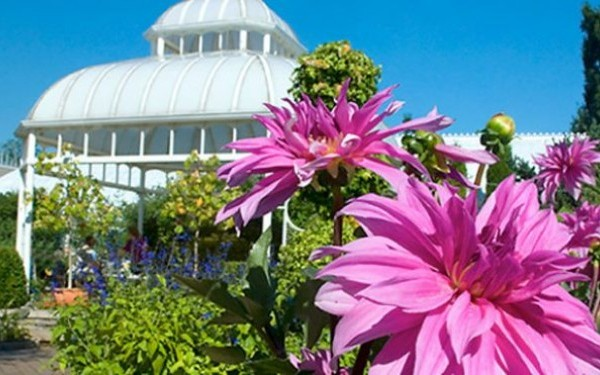
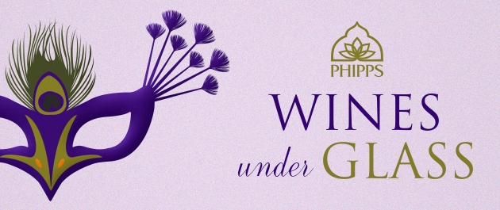

Phipps Conservatory Visitor Statistics

Here we have the data on the number of students that come to Phipps throughout the year. It's always fun to see how many students from each school visit our gardens every year.
Here we have the data on the number of students that come to Phipps throughout the year. It's always fun to see how many students from each school visit our gardens every year.
▶
October 18 - November 9, 2014
In celebration of the harvest season and its changing hues, this colorful exhibit showcases beautiful crysanthemums, vibrant foliage and other festive flowers as tiny trains wind their way through many of the Conservatory's display rooms.
▶
October 30, 2014
Join masked revelers and friends for an unforgettable masquerade party as we raise a glass to toast another year of groundbreaking achievements. As our guest, you will enjoy the company of good friends, delectable food, captivating entertainment, and the beauty of our Fall Flower Show and Tropical Forest India exhibits. Be a part of the celebration!
▶
April 19 - 21, 2015
This conference, presented by Mascaro Center for Sustainable Innovation at the University of Pittsburgh and the Steinbrenner Institute for Environmental Education and Research at Carnegie Mellon University, will bring together members of academia, government, industry, and nonprofits to share sustainability research and practices